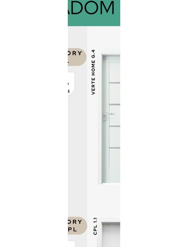

Prémiové interiérové dveře PORTA – falcové i bezfalcové, fólie a Soft CPL
Řada VERTE od PORTA je jednou z nejoblíbenějších prémiových řad interiérových dveří. Povrch Soft CPL je měkčí na dotek, vypadá luxusně a je odolný. Série G/H nabízí klasické vzory, série PREMIUM A/E přidává rustikální a tradiční vzory. Dostupné jako falcové i bezfalcové, v kombinaci s různými typy zárubnní.
Klasický vstupní model řady VERTE. Vzory G (hladké) a H (drážkované). Falcové i bezfalcové.
Prémiová řada s vzory Traditional a Modern. Sofistikovaný design pro náročné interiéry.
Nejvyšší varianta řady VERTE s vzory Traditional a Rustic. Dokonalá napodobenina přírodního dřeva.
Všechny modely řady VERTE jsou dostupné ve 4 základních dekorech.
| Parametr | Hodnota |
|---|---|
| Typ závěsu | Falcové nebo bezfalcové (dle výběru) |
| Povrch křídla | Fólie nebo Soft CPL – měkký, luxusní povrch |
| Sklo | Bez skla nebo se sklem (čiré, matné) – dle vzoru |
| Zárubeň | Falcová nebo bezfalcová obložková zárubeň |
| Zámek | BB (klika-klika) nebo WC (záchod) |
| Orientace | Pravé (P) nebo levé (L) |
| Výrobce | PORTA, Polsko |
| Dostupnost | Na objednávku – dodací lhůta cca 4–6 týdnů |
Pošlete poptávku nebo zavolejte – poradíme s výběrem modelu, barvy i zárubnně.